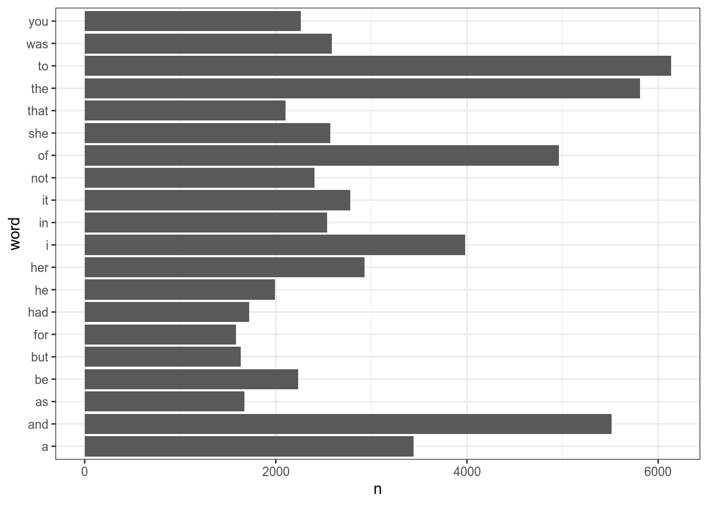
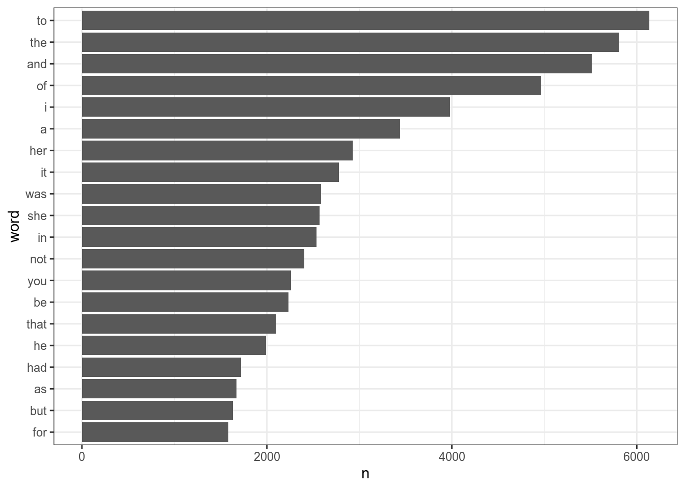
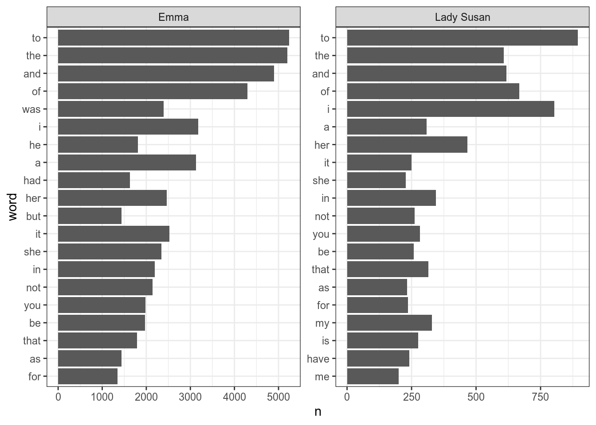
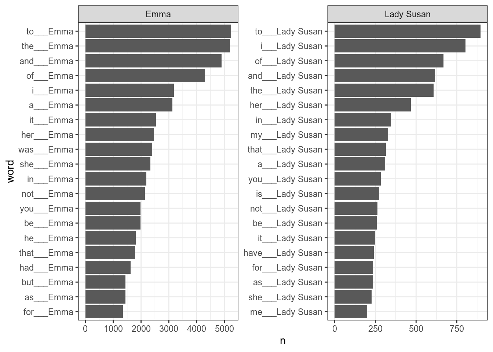
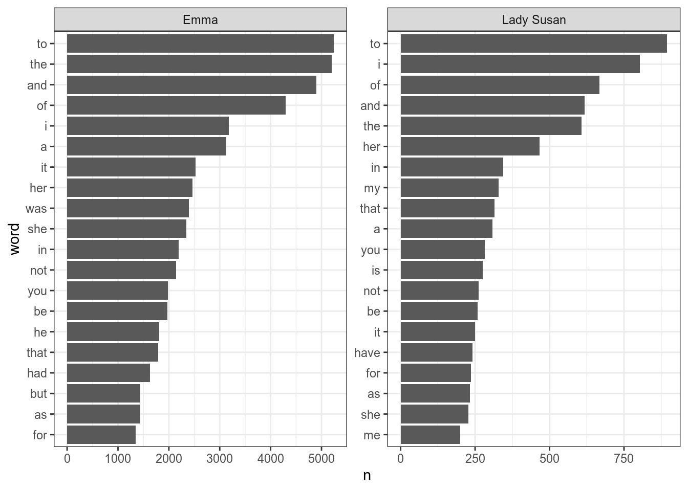
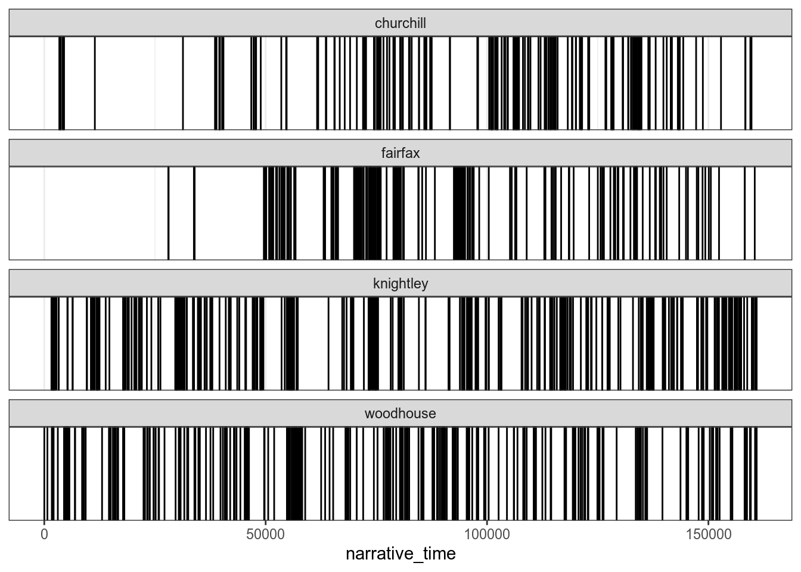

9 Работа с текстами: gutenbergr, tidytext, stopwords, udpipe
9.1 Загрузка текста в R
В пакете readr (входит в tidyverse) для чтения текста есть функция read_lines(). В качестве первой переменной может выступать путь к файлу на компьютере или интернет ссылка:
t <- read_lines("https://raw.githubusercontent.com/agricolamz/2020_HSE_DPO/master/data/Chang.txt")
head(t)[1] "Тед Чан"
[2] "История твоей жизни"
[3] "Твой отец собирается задать мне вопрос. Это самый важный момент в нашей жизни, и я хочу"
[4] "запомнить все до малейшей детали. Уже за полночь, но мы только что вернулись домой после"
[5] "ужина в ресторане и веселого шоу и сразу выходим в патио полюбоваться полной луной. Хочу"
[6] "танцевать! — объявляю я, и твой отец подтрунивает надо мной, но мы начинаем скользить в" Тексты хранятся в интернете по разному. Часто бывает так, что текст дигитализировали так, как он напечатан, так что в результате каждая строка в печатной книжке соответствует строке в текстовом файле (так, например, в нашем примере). Такой файл следует склеить воедино, используя пробел в качестве разделителя:
[1] 1[1] 117398При таком слиянии, стоит проверить, не было ли в анализируемом тексте знаков переноса, иначе они сольются неправильно:
[1] "... она запо- лучила ..."9.2 Пакет gutenbergr
Пакет gutenbergr является API для очень старого проекта Gutenberg.
Все самое важное в этом пакете хранится в датасете gutenberg_metadata
tibble [51,997 × 8] (S3: tbl_df/tbl/data.frame)
$ gutenberg_id : int [1:51997] 0 1 2 3 4 5 6 7 8 9 ...
$ title : chr [1:51997] NA "The Declaration of Independence of the United States of America" "The United States Bill of Rights\r\nThe Ten Original Amendments to the Constitution of the United States" "John F. Kennedy's Inaugural Address" ...
$ author : chr [1:51997] NA "Jefferson, Thomas" "United States" "Kennedy, John F. (John Fitzgerald)" ...
$ gutenberg_author_id: int [1:51997] NA 1638 1 1666 3 1 4 NA 3 3 ...
$ language : chr [1:51997] "en" "en" "en" "en" ...
$ gutenberg_bookshelf: chr [1:51997] NA "United States Law/American Revolutionary War/Politics" "American Revolutionary War/Politics/United States Law" NA ...
$ rights : chr [1:51997] "Public domain in the USA." "Public domain in the USA." "Public domain in the USA." "Public domain in the USA." ...
$ has_text : logi [1:51997] TRUE TRUE TRUE TRUE TRUE TRUE ...
- attr(*, "date_updated")= Date[1:1], format: "2016-05-05"Например, сейчас мы можем понять, сколько книг на разных языках можно скачать из проекта:
Как видно, в основном это тексты на английском. Сколько авторов в датасете?
Сколько произведений Джейн Остин (не перепутайте с другими Остин) есть в датасете?
Давайте скачаем “Эмму”:
Determining mirror for Project Gutenberg from http://www.gutenberg.org/robot/harvestUsing mirror http://aleph.gutenberg.orgМожно скачивать сразу несколько книг. Давайте добавим еще “Леди Сьюзен”:
Сколько уникальных заголовков из базы данных содержит “Sherlock Holmes”?
9.3 Библиотека tidytext
Сейчас скачанные книги записаны в таблицу, где одна строка это один абзац. Хочется мочь посчитать слова. Для этого книги нужно привести в tidy формат и для этого написан пакет tidytext (онлайн книга доступна здесь). Основное “оружие” пакета tidytext функция unnest_tokens(), которая переводит текст в tidy формат. В аргумент output подается вектор с именем будущей переменной, а аргумент input принимает переменную с текстом.
Теперь можно посчитать самые частотные слова в обоих произведениях:
Ну… Это было ожидаемо. Нужно убрать стопслова. Английские стопслова встроены в пакет (переменная stop_words):
Joining, by = "word"Постройте следующий график, на котором представлены самые частотные 20 слов каждого из произведений.

Как видно, на графике все не упорядочено, давайте начнем с такого примера:
books %>%
unnest_tokens(word, text) %>%
count(word, sort = TRUE) %>%
slice(1:20) %>%
ggplot(aes(n, word))+
geom_col()
Если мы работаем с одним фасетом, то все проблемы может решить функция fct_reorder(), которая упорядочивает на основании некоторой переменной:
books %>%
unnest_tokens(word, text) %>%
count(word, sort = TRUE) %>%
slice(1:20) %>%
mutate(word = fct_reorder(word, n)) %>%
ggplot(aes(n, word))+
geom_col()
Однако, если мы применим это к нашим данным, то получится неупорядочено:
books %>%
unnest_tokens(word, text) %>%
count(title, word, sort = TRUE) %>%
group_by(title) %>%
slice(1:20) %>%
ungroup() %>%
mutate(word = fct_reorder(word, n)) %>%
ggplot(aes(n, word))+
geom_col()+
facet_wrap(~title, scales = "free")
В пакете tidytext есть функция reorder_within(), которая позволяет упорядочить нужным образом:
books %>%
unnest_tokens(word, text) %>%
count(title, word, sort = TRUE) %>%
group_by(title) %>%
slice(1:20) %>%
ungroup() %>%
mutate(word = reorder_within(x = word, by = n, within = title)) %>%
ggplot(aes(n, word))+
geom_col()+
facet_wrap(~title, scales = "free")
Чтобы избавиться от дополнительной подписи нужно использовать scale_y_reordered() или scale_x_reordered():
books %>%
unnest_tokens(word, text) %>%
count(title, word, sort = TRUE) %>%
group_by(title) %>%
slice(1:20) %>%
ungroup() %>%
mutate(word = reorder_within(x = word, by = n, within = title)) %>%
ggplot(aes(n, word))+
geom_col()+
facet_wrap(~title, scales = "free")+
scale_y_reordered()
Функция unnest_tokens() позволяет работать не только со словами, но и, напрмиер, с биграммами:
Поиск самых частотных слов — не едиснственная задача, которую можно решать при работе с текстом. Иногда имеет смысл узнать распределение слов в произведении. Давайте посмотрим как распределены в романе “Эмма” фамилии главных героев:
books %>%
filter(title == "Emma") %>%
unnest_tokens(word, text) %>%
mutate(narrative_time = 1:n()) %>%
filter(str_detect(word, "knightley$|woodhouse$|churchill$|fairfax$")) %>%
ggplot()+
geom_vline(aes(xintercept = narrative_time))+
facet_wrap(~word, ncol = 1)
9.4 Пакет stopwords
Выше мы упомянули, что в пакет tidytext встроен список английских стопслов. Стопслова для других язков можно раздобыть списки для других языков, используя пакет stopwords. Вместо имени языка, функция принимает ISO код языыка:
[1] "и" "в" "во" "не" "что" "он" "на"
[8] "я" "с" "со" "как" "а" "то" "все"
[15] "она" "так" "его" "но" "да" "ты" "к"
[22] "у" "же" "вы" "за" "бы" "по" "только"
[29] "ее" "мне" "было" "вот" "от" "меня" "еще"
[36] "нет" "о" "из" "ему" "теперь" "когда" "даже"
[43] "ну" "вдруг" "ли" "если" "уже" "или" "ни"
[50] "быть" "был" "него" "до" "вас" "нибудь" "опять"
[57] "уж" "вам" "сказал" "ведь" "там" "потом" "себя"
[64] "ничего" "ей" "может" "они" "тут" "где" "есть"
[71] "надо" "ней" "для" "мы" "тебя" "их" "чем"
[78] "была" "сам" "чтоб" "без" "будто" "человек" "чего"
[85] "раз" "тоже" "себе" "под" "жизнь" "будет" "ж"
[92] "тогда" "кто" "этот" "говорил" "того" "потому" "этого"
[99] "какой" "совсем" "ним" "здесь" "этом" "один" "почти"
[106] "мой" "тем" "чтобы" "нее" "кажется" "сейчас" "были"
[113] "куда" "зачем" "сказать" "всех" "никогда" "сегодня" "можно"
[120] "при" "наконец" "два" "об" "другой" "хоть" "после"
[127] "над" "больше" "тот" "через" "эти" "нас" "про"
[134] "всего" "них" "какая" "много" "разве" "сказала" "три"
[141] "эту" "моя" "впрочем" "хорошо" "свою" "этой" "перед"
[148] "иногда" "лучше" "чуть" "том" "нельзя" "такой" "им"
[155] "более" "всегда" "конечно" "всю" "между" Пакет предоставляет несколько источников списков:
[1] "snowball" "stopwords-iso" "misc" "smart"
[5] "marimo" "ancient" "nltk" Давайте посмотрем какие языки сейчас доступны:
[[1]]
[1] "da" "de" "en" "es" "fi" "fr" "hu" "ir" "it" "nl" "no" "pt" "ro" "ru" "sv"
[[2]]
[1] "af" "ar" "hy" "eu" "bn" "br" "bg" "ca" "zh" "hr" "cs" "da" "nl" "en" "eo"
[16] "et" "fi" "fr" "gl" "de" "el" "ha" "he" "hi" "hu" "id" "ga" "it" "ja" "ko"
[31] "ku" "la" "lt" "lv" "ms" "mr" "no" "fa" "pl" "pt" "ro" "ru" "sk" "sl" "so"
[46] "st" "es" "sw" "sv" "th" "tl" "tr" "uk" "ur" "vi" "yo" "zu"
[[3]]
[1] "ar" "ca" "el" "gu" "zh"
[[4]]
[1] "en"
[[5]]
[1] "en" "ja" "ar" "he" "zh_tw" "zh_cn"
[[6]]
[1] "grc" "la"
[[7]]
[1] "ar" "az" "da" "nl" "en" "fi" "fr" "de" "el" "hu" "id" "it" "kk" "ne" "no"
[16] "pt" "ro" "ru" "sl" "es" "sv" "tg" "tr"Мы видим, что есть несколько источников для русского языка:
[1] 159[1] 5599.5 Пакет udpipe
Пакет udpipe представляет лемматизацию, морфологический и синтаксический анализ разных языков. Туториал можно найти здесь, там же есть список доступных языков.
Модели качаются очень долго.
Downloading udpipe model from https://raw.githubusercontent.com/jwijffels/udpipe.models.ud.2.4/master/inst/udpipe-ud-2.4-190531/english-ewt-ud-2.4-190531.udpipe to /home/agricolamz/work/materials/2019_2020_ds4dh/class_materials/english-ewt-ud-2.4-190531.udpipeVisit https://github.com/jwijffels/udpipe.models.ud.2.4 for model license detailsТеперь можно распарсить какое-нибудь предложение:
Скачаем русскую модель:
Downloading udpipe model from https://raw.githubusercontent.com/jwijffels/udpipe.models.ud.2.4/master/inst/udpipe-ud-2.4-190531/russian-syntagrus-ud-2.4-190531.udpipe to /home/agricolamz/work/materials/2019_2020_ds4dh/class_materials/russian-syntagrus-ud-2.4-190531.udpipeVisit https://github.com/jwijffels/udpipe.models.ud.2.4 for model license detailsudpipe("Жила-была на свете крыса в морском порту Вальпараисо, на складе мяса и маиса, какао и вина.", object = rumodel)После того, как модель скачана можно уже к ней обращаться просто по имени файла:
udpipe("Жила-была на свете крыса в морском порту Вальпараисо, на складе мяса и маиса, какао и вина.", object = "russian-syntagrus-ud-2.4-190531.udpipe")